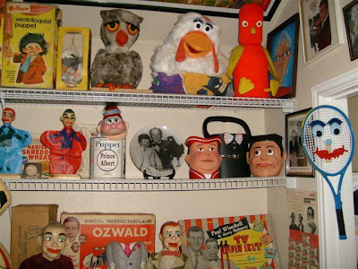

Jugheads
10/19/2009
{kind=link}

From Bob Abdou:Hello, Clinton. After seeing your blog about the toby jug repair, I took a photo of where it is now displayed, and realized where it sits is next to your other items I have collected over the years. Like your owl puppet, the red crazy bird, the Prince Albert in a can, the talking tennis racket, the repaired toby jug (with another version toby jug), and Bill Boley display plate. Behind the 2 toby jugs is a Boley purse puppet - you turn down the handle and a puppet head appears with a moving mouth and the handle becomes the hands, very ingenious.
PS: I was going to use the talking tennis racket in my show at the Clown Convention in Denver when you came to see my show, but I was so nervous performing for you that I totally forgot to use it, and I never get nervous before a show but I was that night :)
PS: I was going to use the talking tennis racket in my show at the Clown Convention in Denver when you came to see my show, but I was so nervous performing for you that I totally forgot to use it, and I never get nervous before a show but I was that night :)